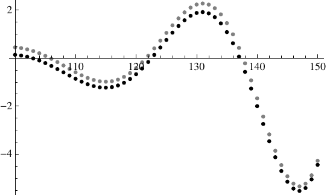
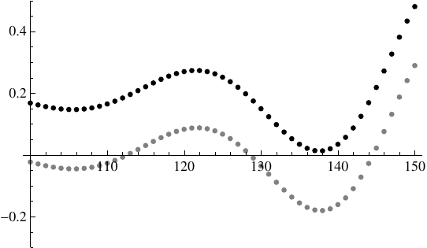
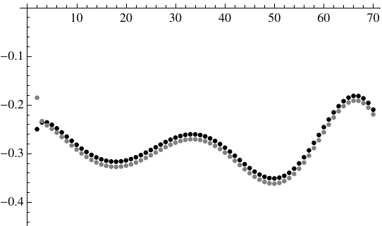
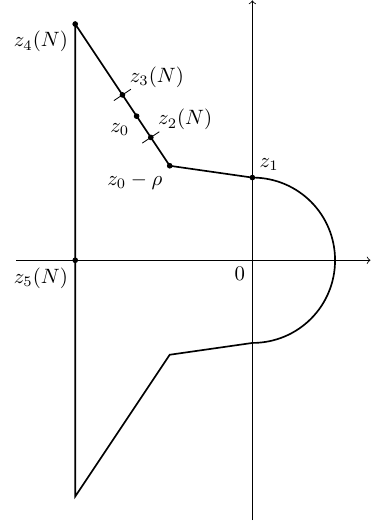

Abstract. In his book Topics in Analytic Number Theory, Rademacher considered the generating function of partitions into at most \(N\) parts, and conjectured certain limits for the coefficients of its partial fraction decomposition. We carry out an asymptotic analysis that disproves this conjecture, thus confirming recent observations of Sills and Zeilberger (Journal of Difference Equations and Applications 19, 2013), who gave strong numerical evidence against the conjecture.
Date: March 13, 2025.
2010 Mathematics Subject Classification. 11P82, 41A60.
Key words and phrases. Integer partitions, partial fraction decomposition, Mellin transform, polylogarithm, saddle point asymptotics.
S. Gerhold gratefully acknowledges financial support from the Austrian Science Fund (FWF) under grant P 24880-N25.
In his book Topics in Analytic Number Theory [12], Rademacher gave a partial fraction decomposition of the partition generating function \(\prod _{j\geq 1}(1-x^j)^{-1}\). He conjectured that the decomposition of the generating function of partitions into at most \(N\) parts, \[ \prod _{j=1}^N \frac {1}{1-x^j} = \sum _{k=1}^N \sum _{\substack {0\leq h<k \\ \gcd (h,k)=1}} \sum _{l=1}^{\lfloor N/k \rfloor } \frac {C_{h,k,l}(N)}{(x-e^{2\pi i h/k})^l}, \] is consistent with it in the sense that the coefficients \(C_{h,k,l}(N)\) converge as \(N\to \infty \) to the coefficients of the decomposition of the unrestricted generating function. Despite attracting the attention of several authors [1, 4, 9], the conjecture has been open since 1973. See Sills and Zeilberger [14] for some further historical remarks. The latter paper presents a recurrence for \(C_{0,1,l}(N)\); the values computed by it do not seem to show convergence, but rather oscillating and unbounded behavior. It is well known, though, that there are number-theoretic problems where the true asymptotics are numerically visible only for very large values. See, e.g., [6] for an example. The present note rigorously confirms the main observation from [14], i.e., we disprove Rademacher’s conjecture.1 To formulate our main result, recall the definition of the dilogarithm function: \(\mathrm {Li}_2(w) = \sum _{k\geq 1}w^k/k^2\), \(|w|<1\). Define \(z_0\approx -1.61 + 7.42i\) as the solution of \begin {equation} \label {eq:z0} \log (1-e^z) + \frac {1}{z}(\mathrm {Li}_2(e^z)-\pi ^2/6) = 0. \end {equation} (It is easy to show that there is a unique root within, say, distance \(1\) of the numerical value given above.) Furthermore, define \(\rho =\exp (i a)\), where \begin {equation} \label {eq:a} a = \frac { \pi }{2} - \frac 12 \arg \left ( \frac {e^{z_0}}{z_0(1-e^{z_0})} \right ) \approx 1.79. \end {equation}
Theorem 1. For any integer \(l\geq 1\), we have the asymptotics \begin {equation} \label {eq:C asympt} C_{0,1,l}(N) = b^N N^{-l-1} H_l(N) + O(b^N N^{-l-117/112}), \quad N\to \infty , \end {equation} where \(b=1/|1-e^{z_0}|\approx 1.07\), and \(H_l\) is a bounded function with period \(p=2\pi /|\arg (1-e^{z_0})|\approx 31.96\), given by \begin {multline*} H_l(N) = \frac {(-1)^{l-1}}{\pi } \sqrt {-\frac {z_0(1-e^{z_0})}{\rho ^2e^{z_0}}} \Bigg (\Im \left ( \frac {\rho (-z_0)^{l-1/2}}{\sqrt {1-e^{z_0}}}\right )\cos \big (N \arg (1-e^{z_0})\big ) \\ -\Re \left (\frac {\rho (-z_0)^{l-1/2}}{\sqrt {1-e^{z_0}}}\right )\sin \big (N \arg (1-e^{z_0})\big )\Bigg ). \end {multline*}
Note that the number under the first radical sign is real and positive. The period \(p\) of the oscillations is roughly \(32\), as observed by Sills and Zeilberger [14]. It is independent of \(l\), as is the exponential growth order \(b^N\). Moreover, Sills and Zeilberger found that the successive peaks seem to grow exponentially with a factor around \(8\). The (asymptotically) true factor is \(b^p\approx 8.81\). Figures 1 and 2 illustrate the quality of the approximation, which seems to be better for \(l=1\) than for \(l=2\).


In principle, it should be possible to extend our approach from \((h,k)=(0,1)\) to general \(h,k\). Moreover, a natural conjecture is that the period \(2\pi /|\arg (1-e^{z_0})|\) of \(H_l\) is a transcendental number. While there is some literature on transcendence of polylogarithm values (see, e.g., [7]), we are not aware of any result that would imply this.
The rest of the paper is organized as follows. In Section 2, we appeal to the Cauchy integral representation of \(C_{0,1,l}(N)\) and find an asymptotic approximation for its integrand. The new integrand is analysed in Section 3 by the saddle point method. Section 4 completes the proof of Theorem 1 by adding estimates in regions where the asymptotic approximation for the integrand has to be modified or is invalid. In the conclusion, we comment on the error term in \(\eqref {eq:C asympt}\), and on possible future work.
Since the \(C_{0,1,l}(N)\) are the Laurent coefficients of \(\prod _{j=1}^N (1-x^j)^{-1}\) at \(x=1\), we can express them by Cauchy’s formula: \begin {align} C_{0,1,l}(N) &= \frac {1}{2i\pi } \oint x^{l-1} \prod _{j=1}^N \frac {1}{1-(x+1)^j}dx \notag \\ & = \frac {(-1)^{l-1}}{N^l} \frac {1}{2i\pi } \oint F(z,N) dz, \label {eq:F} \end {align}
where we have substituted \(x+1=e^{z/N}\), and \begin {equation} \label {eq:F def} F(z,N) := e^{f(z,N)} := e^{z/N}N^{l-1}(1-e^{z/N})^{l-1}\prod _{j=1}^N \frac {1}{1-e^{zj/N}}. \end {equation} We wish to replace the integrand \(F\) by an asymptotic approximation, derived by a Mellin transform approach. We do the analysis for \(\Re z<0\), since the factor \(e^{-Nz/2}\) in \begin {equation} \label {eq:refl} \prod _{j=1}^N \frac 1{1-e^{zj/N}} = (-1)^N e^{-z(N+1)/2} \prod _{j=1}^N \frac 1{1-e^{-zj/N}} \end {equation} suggests that the contribution of the left half-circle dominates the integral \(\eqref {eq:F}\); a rigorous argument is given in Section 4. To take the Mellin transform of \(f=\log F\) w.r.t. \(N\), we have to interpolate between integral values of \(N\). We therefore rewrite the logarithm of the product \(\prod _{j=1}^N\) in \(\eqref {eq:F def}\) as follows: \begin {align*} g(z,N) &:= \log \prod _{j=1}^n \frac {1}{1-e^{zj/N}} \\ &= - \sum _{j=1}^N \log (1-e^{zj/N}) \\ &= \sum _{j=1}^N \sum _{k=1}^\infty \frac {1}{k}e^{zjk/N} = \sum _{k=1}^\infty \frac {1}{k} \frac {1-e^{kz}}{e^{-kz/N}-1}. \end {align*}
Now we can compute the Mellin transform of \(g\) w.r.t. \(N\), for \(\Re (s)<-1\): \begin {align} \mathcal {M}g(z,\cdot )(s)&=\int _0^\infty g(z,x)x^{s-1}dx \notag \\ &= \sum _{k=1}^\infty \frac {1-e^{kz}}{k} \int _0^\infty \frac {x^{s-1}}{e^{-kz/x}-1} dx \notag \\ &= \sum _{k=1}^\infty \frac {1-e^{kz}}{k} (-kz)^s \Gamma (-s)\zeta (-s) \notag \\ &= (-z)^s \Gamma (-s)\zeta (-s) \left (\sum _{k=1}^\infty k^{s-1} - \sum _{k=1}^\infty k^{s-1} e^{kz} \right ) \notag \\ &= (-z)^s \Gamma (-s)\zeta (-s) \Big (\zeta (1-s) - \mathrm {Li}_{1-s}(e^z)\Big ). \label {eq:mellin} \end {align}
Recall that the polylogarithm is defined for \(|w|<1\) and \(\nu \in \mathbb {C}\) by \(\mathrm {Li}_\nu (w) = \sum _{k\geq 1}w^k/k^\nu \). For the integral evaluation used in the third equality, see Titchmarsh [15], p. 18; it already appears in Riemann’s original memoir [13]. By the Mellin inversion formula [5], \(g\) can be recovered by \begin {equation} \label {eq:g mell} g(z,N) = \frac {1}{2i\pi } \int _{-3/2-i\infty }^{-3/2+i \infty } \mathcal {M}g(z,\cdot )(s) N^{-s}ds. \end {equation} We now move the integration line to the right and collect residues. To estimate the resulting integral (and justify Mellin inversion), we first establish a bound on \( \mathrm {Li}_{1-s}(e^z)\) for \(|\Im s|\) large. Note that Pickard [11] studied asymptotics of \(\mathrm {Li}_\nu (w)\) for \(\nu \to 0\) and \(\nu \to \infty \), and wrote that “little is known about behavior in the \(\nu \)-plane except along and near the line \((0,\infty )\).”
Lemma 2. Suppose that \(z\) is bounded, bounded away from \(0\) and \(\pm 2i\pi \), \(|\Im z|<8\), and \(\Re z \leq 0\). Then, for \(\Re s>1\) fixed and \(|\Im s|\to \infty \), we have \[ \mathrm {Li}_{1-s}(e^z) = O( |\Im s|^{\Re s -1/2}). \]
Proof. We use the representation \begin {equation} \label {eq:Li Hurwitz} \mathrm {Li}_{1-s}(e^z) = \frac {\Gamma (s)}{(2\pi )^s} \left ( i^s \zeta \left (s,\frac 12 + \frac {\log (-e^z)}{2i\pi }\right ) + i^{-s} \zeta \left (s,\frac 12 - \frac {\log (-e^z)}{2i\pi }\right )\right ), \end {equation} due to Jonquière [8], where \[ \zeta (s,q) = \sum _{k=0}^\infty \frac {1}{(q+n)^s}, \quad \Re s >1, \Re q >0, \] is the Hurwitz zeta function. First we establish some simple estimates for this function. Suppose that \(\Im s \to +\infty \) and that \(\Im q <0\). Since \begin {equation} \label {eq:q+n} |q+n|^{-s} = |q+n|^{-\Re s} e^{\Im (s) \arg (q+n)} \end {equation} and \(\arg (q+n)<0\), we obtain \[ |\zeta (s,q)| \leq \sum _{k=0}^\infty |q+n|^{-\Re s} = O(1), \] for bounded \(q\) with \(\Re q>0\) and \(q\) bounded away from zero. If \(\Im q >0\), on the other hand, we use the bound \(e^{\Im (s) \arg (q+n)} \leq e^{\tfrac 12 \pi \Im s}\) in \(\eqref {eq:q+n}\) to conclude \[ \zeta (s,q) = O(e^{\tfrac 12 \pi \Im s}). \] Analogous bounds hold for \(\Im s\to -\infty \). To apply them to \(\eqref {eq:Li Hurwitz}\), note that \[ \Re \left (\frac 12 \pm \frac {\log (-e^z)}{2i\pi }\right )>0 \quad \text {and} \quad \Im \left (\frac 12 + \frac {\log (-e^z)}{2i\pi }\right )>0 \] in the specified range of \(z\). For the desired estimate, it now suffices to observe that \(|i^{\pm s}|=\exp (\mp \tfrac 12\pi \Im s)\), that the factor \((2\pi )^{-s}\) is \(O(1)\), and that we have \[ \Gamma (s) = O(e^{-\tfrac 12 \pi |\Im s|} |\Im s|^{\Re s - 1/2}) \] by Stirling’s formula. □
We can now find the asymptotics of \(g\) by shifting the integration in \(\eqref {eq:g mell}\) to the right, where \(\Re s =8/7\) turns out to be a suitable choice. The polylogarithm \(\mathrm {Li}_{1-s}(e^z)\) is an entire function of \(s\). Moreover, \(\zeta (-s)\) has a simple pole at \(s=-1\), and \(\Gamma (-s)\) has simple poles at the non-negative integers. Because of the factor \(\zeta (1-s)\), the transform \(\eqref {eq:mellin}\) has a double pole at \(s=0\), which results in a logarithmic term in the asymptotics of \(g\).
Lemma 3. For \(\Re z<0\), the function \(f\) defined in \(\eqref {eq:F def}\) has the representation \begin {multline} \label {eq:f asympt} f(z,N) = \frac {1}{z}\Big ( \mathrm {Li}_2(e^z) - \frac {\pi ^2}{6}\Big )N - \frac 12 \log N \\ - \frac 12 \Big (\log 2\pi +\log (1-e^{z}) - \log (-z)\Big ) +(l-1)\log (-z)+ h(z,N), \end {multline} where \(h\) is given by \begin {multline} \label {eq:h} h(z,N) = \frac {z(e^z+1)}{24(e^z-1)} \frac 1N +\frac {z}{N} + \frac {1}{2i\pi }\int _{8/7-i\infty }^{8/7+i\infty } \mathcal {M}g(z,\cdot )(s) N^{-s} ds \\ -(l-1) \log (-z) + (l-1) (\log N + \log (1-e^{z/N})). \end {multline} The function \(h\) is
Proof. We shift the integration in \(\eqref {eq:g mell}\) to \(\Re s=8/7\). The residues of \(\eqref {eq:mellin}\) at \(s=-1\), \(s=0\), and \(s=1\) are straightforward to compute and yield \begin {multline*} g(z,N) = \frac {1}{z}\Big ( \mathrm {Li}_2(e^z) - \frac {\pi ^2}{6}\Big )N - \frac 12 \log N - \frac 12 \Big (\log 2\pi +\log (1-e^{z}) - \log (-z)\Big )\\ + \frac {z(e^z+1)}{24(e^z-1)} \frac 1N +\frac {1}{2i\pi }\int _{8/7-i\infty }^{8/7+i\infty } \mathcal {M}g(z,\cdot )(s) N^{-s} ds. \end {multline*} Together with the definition of \(f=\log F\) in \(\eqref {eq:F}\), we obtain \(\eqref {eq:f asympt}\). Except for the integral, it is immediate that all terms in \(\eqref {eq:h}\) satisfy the bounds stated in (i) and (ii). Note that \[ \log (1-e^{z/N}) = \log (-z) - \log N + O(N^{-1/2}) \] in both cases (i) and (ii), and that \[ \left |\frac {e^z+1}{e^z-1}\right | = \frac {1+e^{2 \Re z} +2e^{ \Re z} \cos (\Im z)} {1+e^{2 \Re z} -2e^{ \Re z} \cos (\Im z)} \leq \frac {1+e^{2 \Re z} +2e^{ \Re z} } {1+e^{2 \Re z} -2e^{ \Re z} } \] is bounded. To estimate the integral in \(\eqref {eq:h}\), we use the following well-known equations resp. estimates, for \(\Re s= 8/7\) and \(\Im s\to \infty \) (\(\Im s<0\) is treated by conjugation): \begin {align} |N^{-s}| &= N^{-\Re s}, \notag \\ |(-z)^s| &= |z|^{\Re s} e^{-\Im (s) \arg (-z)}, \label {eq:-z} \\ |\Gamma (-s)| &\sim \sqrt {2\pi } e^{-\tfrac 12\pi \Im s} (\Im s)^{-\Re s - 1/2}, \label {eq:stirling} \\ \zeta (-s) &= O((\Im s)^{\Re s+1/2}), \label {eq:zeta} \\ \zeta (1-s)&= O((\Im s)^{ \Re s-1/2}). \label {eq:zeta1} \end {align}
For \(\eqref {eq:zeta}\) and \(\eqref {eq:zeta1}\), see Titchmarsh [15], p. 95. In case (i), we have \[ |\mathrm {Li}_{1-s}(e^z) | \leq \mathrm {Li}_{\Re (1-s)}(e^{\Re z}) = O(1) \] by the triangle inequality and the analyticity of the polylogarithm in the unit disk. Since \(|\arg z|\geq \pi /2+\varepsilon \), we see from \(\eqref {eq:-z}\) and \(\eqref {eq:stirling}\) that the integrand has an exponentially decaying factor \(\exp (-\Im (s) (\arg (-z) + \tfrac 12 \pi )) \leq \exp (-\varepsilon \Im s)\). The integral is thus \(O(N^{-\Re s}|z|^{\Re s})=O(N^{-4/7})=O(N^{-1/2})\).
In case (ii), the decay of the exponential bound slows down as \(N\) increases, because \(\arg (-z)\) may approach \(-\pi /2\), and we must also take into account the powers of \(\Im s\) in the estimates \(\eqref {eq:-z}--\ref {eq:zeta1}\) and Lemma 2. The boundedness of \(z\) guarantees that \(|z|^{\Re s}\) in \(\eqref {eq:-z}\) stays bounded, and that \(\arg (-z) + \pi /2 \sim -\Re z\) for \(\Re z\to 0\). We can thus bound the integral by a constant multiple of \[ N^{-\Re s}\int _0^\infty e^{-N^{-7/8}x} x^{\Re s-1/2}dx= N^{-8/7} N^{23/26}=O(N^{33/112}). \] Note that the powers of \(\Im s\) in \(\eqref {eq:stirling}\) and \(\eqref {eq:zeta}\) cancel, and that \(\eqref {eq:zeta1}\) and Lemma 2 show that the term in parentheses in \(\eqref {eq:mellin}\) is \(O((\Im s)^{\Re s-1/2})\). □
Lemma 3 suggests the approximate integral representation \begin {multline} \label {eq:new int} C_{0,1,l}(N) \\ \approx \frac {(-1)^{l-1}}{N^{l+1/2}(2\pi )^{3/2}i} \int _{|z|=5, \Re z\leq 0} \frac {(-z)^{l-1/2}}{\sqrt {1-e^z}} \exp \left ( \frac {z}{N} + \frac {N}{z} \left ( \mathrm {Li}_2(e^z) - \frac {\pi ^2}{6}\right ) \right ) dz, \end {multline} where \(h\) from \(\eqref {eq:f asympt}\) has been replaced by zero, except the term \(z/N\), which was retained for better accuracy. Recall that the right half-circle is negligible, as mentioned above and proved in Section \(\eqref {se:right}\). Even for small \(N\), the fit is very good for \(l=1\); see Figure 3.

We now proceed by a saddle point analysis of the integral \(\eqref {eq:F}\), using the approximation of the integrand provided by Lemma 3. According to this lemma, the factor \( \exp \left ( \frac 1z \left ( \mathrm {Li}_2(e^z) - \frac {\pi ^2}{6}\right ) N \right )\) dominates the integrand in \(\eqref {eq:F}\). Equating its derivative to zero, we obtain the saddle point \(z_0\) defined in \(\eqref {eq:z0}\). The argument of its axis is (see [3]) \begin {align*} a &= \frac { \pi }{2} - \frac 12 \arg \frac {d^2}{dz^2} \left .\left ( \frac 1z \left ( \mathrm {Li}_2(e^z) - \frac {\pi ^2}{6}\right )\right ) \right |_{z=z_0} \\ &= \frac { \pi }{2} - \frac 12 \arg \left ( \frac {e^{z_0}}{z_0(1-e^{z_0})} \right ) \approx 1.79, \end {align*}
and \(\rho =e^{ia}\) is thus the direction of steepest decent. By symmetry, the conjugate \(\bar {z}_0\) is a saddle point, too, and its direction of steepest descent is \(\bar {\rho }\). We now deform the integration

circle as follows (see Figure 4): In the right half-plane, we stay with a half-circle, of radius \(5\). In the left half-plane, we connect the point \(z_1:=5i\) with the point \( z_0-\rho \) by a straight line. We then proceed by a line through the saddle point \(z_0\), up to a point \(z_4(N)\). A vertical line then connects this point to the real axis, to \(z_5(N):=-\sqrt {N}\), and so \(z_4\) must be \[ z_4(N) := -\sqrt {N} + i (\Im z_0-(\sqrt {N}+\Re z_0) \Im \rho / \Re \rho . \] Around the saddle point, we identify a range of width \(O(N^{-39/112})\), delimited by the points \[ z_2(N):=z_0-\rho N^{-39/112} \quad \text {and} \quad z_3(N):=z_0+\rho N^{-39/112}. \] In the lower half-plane, the contour is defined symmetrically. We refer to the line from \(z_2\) to \(z_3\) to the (upper) central part of the contour, as it gives the dominant contribution to the integral (in the upper half-plane). Note that \(-39/112\approx -0.348\) is just a little bit smaller than \(-1/3\). To make the third-order term \(N(z-z_0)^3\) in the local expansion of the integrand negligible, we must have \(z-z_0 \ll N^{-1/3}\). It is convenient to make the central part as large as possible, though, because this causes faster decrease of \(F=e^f\) at \(z=z_2(N)\) and \(z=z_3(N)\), which in turn makes it easier to beat the estimate for \(h\) from Lemma 3. (For details, see the tail estimate in Lemma 4 below.)
Part (i) of Lemma 3 provides the local expansion in the central range, where \(z=z_0+t\rho \), \(-N^{-39/112}\leq t \leq N^{-39/112}\): \begin {multline} \label {eq:loc expans} f(z,N) = - N \log (1 -e^{z_0}) -\tfrac 12 \alpha N t^2 - \tfrac 12 \log N \\ + (l-\tfrac 12)\log (-z_0) -\tfrac 12 (\log 2\pi +\log (1-e^{z_0})) + O(N^{-5/112}). \end {multline} (Note that the expansion was simplified by using the defining equation \(\eqref {eq:z0}\) of \(z_0\).) The constant \[ \alpha := -\frac {\rho ^2e^{z_0}} {z_0(1-e^{z_0})} \approx 0.028 \] is real and positive. Since \[ \int _{-N^{-39/112}}^{N^{-39/112}}\exp (-\tfrac 12 \alpha N t^2)dt \sim \frac {1}{\sqrt {\alpha N}}\int _{-\infty }^{\infty }e^{-x^2/2}dx = \sqrt {\frac {2\pi }{\alpha N}}, \] with exponentially decaying error term, the saddle point integral has the asymptotics \begin {equation} \label {eq:sp int} \int _{z_2(N)}^{z_3(N)} e^{f(z,N)}dz = \frac {\rho (-z_0)^{l-1/2}}{ \sqrt {\alpha (1-e^{z_0})}} \frac 1N (1-e^{z_0})^{-N}(1+O(N^{-5/112})). \end {equation} The integral over the lower saddle point segment is \[ \int _{\bar {z}_3(N)}^{\bar {z}_2(N)}e^{f(z,N)}dz = - \overline {\int _{z_2(N)}^{z_3(N)} e^{f(z,N)}dz}, \] and thus the contribution of both saddle points to the integral \(\eqref {eq:F}\) is \[ \frac {(-1)^{l-1}}{\pi N^l} \Im \left ( \int _{z_2(N)}^{z_3(N)} e^{f(z,N)}dz \right ). \] By \(\eqref {eq:sp int}\), we see that this gives the right hand side of \(\eqref {eq:C asympt}\).
To show that the two small line segments containing the saddle points \(z_0\) resp. \(\bar {z}_0\) capture the asymptotics of the full integral \(\eqref {eq:F}\), we have to show that the remaining part of the contour in Figure 4 is negligible. By conjugation, it clearly suffices to consider the upper half-plane. We begin with the part that, additionally, lies in the half-plane \(\Re z \leq N^{-7/8}\). In the next section, we show that the integral over the remaining part tends exponentially to zero.
Lemma 4. \begin {multline} \label {eq:tail ints} \int _{z_1}^{z_2} \mathbf {1}_{\{\Re z \leq -N^{-7/8}\}}F(z,N) dz + \int _{z_3}^{z_4}F(z,N) dz \\ + \int _{z_4}^{z_5}F(z,N)dz = O\Big (b^N \exp \Big ( -\tfrac 13 \alpha N^{17/56} \Big )\Big ). \end {multline}
Proof. We begin with the first integral. By part (ii) of Lemma 3, \(f=\log F\) satisfies \[ f(z,N) = \frac {1}{z}\Big ( \mathrm {Li}_2(e^z) - \frac {\pi ^2}{6}\Big )N + O(N^{33/112}) \] there. It is straightforward to verify that the function \begin {equation} \label {eq:z Re} z\mapsto \Re \left ( \frac {1}{z}\Big ( \mathrm {Li}_2(e^z) - \frac {\pi ^2}{6}\Big )\right ) \end {equation} increases as \(z\) moves along the contour from \(z_1\) to \(z_0\). By \(\eqref {eq:loc expans}\), we can therefore bound the first integral in \(\eqref {eq:tail ints}\) by \begin {align*} \exp &\left ( N \Re \left ( \frac {1}{z} \Big ( \mathrm {Li}_2(e^z) - \frac {\pi ^2}{6} \Big ) \Big |_{z=z_2} \right ) + O(N^{33/112}) \right ) \\ &= |1-e^{z_0}|^{-N} \exp \Big ( -\tfrac 12 \alpha N^{17/56} + O(N^{33/112})\Big ) \\ &= O\Big (b^N \exp \Big ( -\tfrac 13 \alpha N^{17/56} \Big )\Big ), \end {align*}
where the length of the contour was absorbed into the \(O\). The second integral in \(\eqref {eq:tail ints}\) can be estimated analogously, by part (i) of Lemma 3. the function \(\eqref {eq:z Re}\) decreases only eventually as \(z\) moves from \(z_3\) to \(z_4\), but it is nowhere larger than at \(z_3\), which suffices.
Finally, we bound the last integral in \(\eqref {eq:tail ints}\). The function \(h\) from \(\eqref {eq:h}\) is \(o(1)\) here, by part (i) of Lemma 3. The factor \((e^z-1)^{-1/2}\) is \(O(1)\), and \(-\pi ^2N/(6z)\) is \(O(N^{1/2})\). The dilogarithm is \(\mathrm {Li}_2(e^z) = O(e^{-\sqrt {N}})\), hence \((N/z)\mathrm {Li}_2(e^z) = o(1)\), and so \[ f(z,N) = (l-\tfrac 12)\log (-z) +O(N^{1/2}). \] As the integral of \((-z)^{l-1/2}\) from \(z_4\) to \(z_5\) grows only polynomially, the last integral in \(\eqref {eq:tail ints}\) is \(\exp (O(\sqrt {N}))\), and we are done. □
In the preceding section, have gave an asymptotic evaluation of the integral \(\eqref {eq:F}\), where the contour was deformed as in Figure 4, and \(\Re z < -N^{-7/8}\). We now show that the remaining part of the contour is negligible. Close to the imaginary axis, where \(-N^{-7/8} \leq \Re z \leq 0\), we are outside of the validity region of the Mellin transform asymptotics of Lemma 3. We thus estimate the integrand in \(\eqref {eq:F}\) directly.
Lemma 5. We have \[ \int _{z_1}^{z_2} \mathbf {1}_{\{\Re z \geq -N^{-7/8}\}}F(z,N) dz = O(0.85^N). \]
Proof. For simplicity, we assume that \(z\) lies on a horizontal line, so that \(\Im z=5\); this is justified, because the monotonicity used in the proof of Lemma 4 persists if we adjust the contour like this in a small neighborhood of \(5i\). It thus suffices to show that \begin {equation} \label {eq:prod est} \prod _{j=1}^N \frac {1}{|1-e^{z j/N}|} = O(0.84^N), \end {equation} uniformly for \(\Im z=5\) and \(-N^{-7/8} \leq \Re z \leq 0\), because all other factors in \(\eqref {eq:F}\) grow subexponentially. A simple calculation yields \begin {equation} \label {eq:abs expl} \frac {1}{|1-e^{z j/N}|} = \left (1+ e^{2j \Re (z)/N} - 2\cos (5j/N) e^{j \Re (z)/N} \right )^{-1/2}. \end {equation} We divide the product \(\eqref {eq:prod est}\) into \(j\leq N/10\) and \(j>N/10\). In the latter range, we have \(1/(1-\cos (5j/N))=O(1)\), and thus \begin {align} 1+ e^{2j \Re (z)/N} - 2\cos (5j/N) e^{j \Re (z)/N} &= 2(1-\cos (5j/N))+ O(N^{-7/8}) \notag \\ &= 2(1-\cos (5j/N))(1+ O(N^{-7/8})). \label {eq:j big} \end {align}
Now \((1+ O(N^{-7/8}))^N\) grows subexponentially and can be ignored (by rounding up the exponential factor we finally obtain slightly). The remaining product \begin {equation} \label {eq:prod sum} \prod _{N/10 \leq j\leq N}(1-\cos (5j/N))^{-1/2} = \exp \left (-\frac 12 \sum _{N/10 \leq j\leq N} \log (1-\cos (5j/N)) \right ) \end {equation} can be treated by Euler’s summation formula. We have, with \(\phi (x):=-\log (1-\cos (5x/N))\), \begin {equation} \label {eq:euler} \sum _{N/10 \leq j\leq N} \phi (j) = \int _{\lfloor N/10 \rfloor }^{N+1} \phi (x)dx -\frac 12(\phi (N+1)-\phi (\lfloor N/10 \rfloor )) + \int _{\lfloor N/10 \rfloor }^{N+1}(\{x\}-\frac 12)\phi '(x)dx. \end {equation} The term \(-\tfrac 12(\dots )\) is clearly \(O(1)\). Since \(\phi '(x) = -5/N \cot (5x/2N)\), the last integral can be estimated by \begin {align*} \int _{\lfloor N/10 \rfloor }^{N+1} | \phi '(x) | dx &= \int _{ N/10 }^{N+1} | \phi '(x) | dx + O(1) \\ &= -\int _{ N/10 }^{\pi N/5}\phi '(x) dx + \int _{\pi N/5}^{N+1}\phi '(x)dx +O(1) \\ &= -2\phi (\pi N/5)+\phi (N/10)+\phi (N+1)+O(1) = O(1). \end {align*}
The main integral in \(\eqref {eq:euler}\) can be done in closed form (with Mathematica, e.g.): \[ \int \phi (x) dx = -\frac {5i x^2}{2N} + 2x \log (1-e^{5ix/N}) - x \log (1-\cos (5x/n)) - \frac 25 i N \mathrm {Li}_2(e^{5ix/N}). \] From this we easily deduce \[ \int _{\lfloor N/10 \rfloor }^{N+1} \phi (x)dx = -c N + O(1), \] where \begin {multline*} c = \frac {1}{40}(99 i +8\log (1-e^{i/2}) -80 \log (1-e^{5i}) -4\log (1-\cos (1/2)) \\ + 40 \log (1-\cos 5) -16i \mathrm {Li}_2(e^{i/2}) +16i \mathrm {Li}_2(e^{5i})) \approx 0.11262. \end {multline*} Inserting all this into \(\eqref {eq:prod sum}\) yields \[ \prod _{N/10 \leq j\leq N}(1-\cos (5j/N))^{-1/2} = \exp (-\tfrac 12 cN + O(1)), \] and therefore (without forgetting the factor \(2\) in \(\eqref {eq:j big}\)) \begin {equation} \label {eq:prod j big} \prod _{N/10 \leq j\leq N} \frac {1}{|1-e^{z j/N}|} = O(2^{-9N/20} e^{-cN/2} (1+\varepsilon )^N ) = O(0.7^N). \end {equation}
Now we treat the range \(j\leq N/10\). For this we prove an appropriate inequality. Noting that \(\cos (5j/N)\) is positive, and using truncated Taylor series three times, we obtain \begin {align*} 1+ e^{2j \Re (z)/N}& - 2\cos (5j/N) e^{j \Re (z)/N} \geq 1+\left [1+x+\frac {x^2}{2}+\frac {x^3}{6} \right ]_{x=2j \Re (z)/N} \\ &- 2\left [1-\frac {x^2}{2}+\frac {x^4}{24} \right ]_{x=5j/N} \cdot \left [1+x+\frac {x^2}{2} \right ]_{x=j \Re (z)/N}. \end {align*}
This can be bounded from below by \begin {equation} \label {eq:lower bd} \geq \frac {11j^2}{12N^2}(\Re (z)^2+25). \end {equation} The latter fact is a polynomial inequality with polynomial constraints, and can be established by cylindrical algebraic decomposition [2], e.g., with Mathematica. Note that the form of \(\eqref {eq:lower bd}\) was guessed from a Taylor expansion of \(\eqref {eq:abs expl}\) for \(j\approx 0\). From \(\eqref {eq:abs expl}\) and \(\eqref {eq:lower bd}\) we have the estimate \begin {align} \prod _{1\leq j\leq N/10} \frac {1}{|1-e^{z j/N}|} &\leq \prod _{1\leq j\leq N/10} \sqrt {\frac {12}{11}} \frac {N}{j} ((\Re z)^2 +25)^{-1/2} \notag \\ &\leq \left ( \frac {12}{275} \right )^{N/10} N^{N/10} \lfloor N/10 \rfloor !^{-1}(1+\varepsilon )^N \notag \\ & \leq \left ( \left (\frac {12}{275}\right )^{1/20}(10e)^{1/10}(1+\varepsilon )\right )^N \leq 1.19^N, \label {eq:j small} \end {align}
for \(N\) large. Now multiply \(\eqref {eq:prod j big}\) and \(\eqref {eq:j small}\) to get the result. □
Finally, we estimate the integral over the right half-circle in \(\eqref {eq:F}\), which completes the proof of Theorem 1. By the reflection formula \(\eqref {eq:refl}\), we can recycle part of the analysis from the left half-plane.
Lemma 6. \[ \frac {(-1)^{l-1}}{N^l} \frac {1}{2i\pi } \int _{|z|=5} \mathbf {1}_{\{\Re z>0\}} F(z,N) dz = O(0.95^N). \]
Proof. First consider the range \(0< \Re z \leq N^{-7/8}\). All factors in front of the products in \(\eqref {eq:F def}\) and \(\eqref {eq:refl}\) grow at must subexponentially, and so this part of the integral is \(O(0.85^N)\) by \(\eqref {eq:refl}\) and \(\eqref {eq:prod est}\).
On the other hand, for \(N^{-7/8}< \Re z \leq 5\), the proof of Lemma 3 shows that the product in \(\eqref {eq:refl}\) satisfies \[ \prod _{j=1}^N \frac {1}{1-e^{-zj/N}} = \exp \left ( -\frac {1}{z}\Big ( \mathrm {Li}_2(e^{-z}) - \frac {\pi ^2}{6}\Big )N +O(N^{33/112}) \right ). \] The function \[ z \mapsto \Re \left (-\frac {1}{z} \Big ( \mathrm {Li}_2(e^{-z}) - \frac {\pi ^2}{6}\Big ) \right ) \] increases as \(z\) moves on the arc from \(-5i\) to \(5\) and then decreases until \(5i\). Close to the imaginary axis, where \(|\arg z|\geq \tfrac {9}{20}\pi \), we thus have the bound \[ \left |\exp \left ( -\frac {1}{z}\Big ( \mathrm {Li}_2(e^{-z}) - \frac {\pi ^2}{6}\Big )N \right ) \right | \leq 0.97^N, \] obtained by inserting \(z=5\exp (\tfrac {9}{20}\pi i)\). Taking into account the subexponential factors, this portion of the integral is \(O(0.98^N)\). If \(|\arg z|\leq \tfrac {9}{20}\pi \), i.e., \(z\) is bounded away from the imaginary axis, we get help from the factor \(e^{-zN/2}\) in \(\eqref {eq:refl}\). It is bounded by its absolute value at \(z=5\exp (\tfrac {9}{20}\pi i)\), and thus not larger than \(0.68^N\). Since \[ \left |\exp \left ( -\frac {1}{z}\Big ( \mathrm {Li}_2(e^{-z}) - \frac {\pi ^2}{6}\Big )N \right ) \right | \leq 1.39^N, \] as found by plugging in \(z=5\), the integral for \(N^{-7/8}< \Re z\) is \(O(0.68^N \cdot 1.39^N)=O(0.95^N)\). □
The error term that we obtained in \(\eqref {eq:C asympt}\) can be improved a bit by considering more terms of the local expansion \(\eqref {eq:loc expans}\) of \(f\) in the saddle point analysis. Getting the correct order of the error term, i.e., the next term in the asymptotic expansion of \(C_{0,1,l}(N)\), needs some work, though. As only the first term on the right-hand side of \(\eqref {eq:f asympt}\) was used to define the saddle point \(z_0\), the logarithmic terms in \(\eqref {eq:f asympt}\) contribute a non-vanishing first order term \(O(z-z_0)=O(N^{-39/112})\) to the expansion \(\eqref {eq:loc expans}\). To improve it, we need to replace \(z_0\) by a better approximation of the actual saddle point of the whole integrand \(F=e^f\). But then, the tail estimate in Lemma 4 becomes more involved, because not only the width, but also the location of the saddle point segment depends on \(N\).
Perhaps more importantly, we comment on possible future work. Recall that Rademacher’s conjecture essentially says that the operations of limit and partial fraction decomposition commute in the present setting. While our result refutes the conjecture, it does not clarify the relation between the partial fraction decompositions of \(\prod _{j\geq 1}(1-x^j)^{-1}\) and \(\prod _{j=1}^N(1-x^j)^{-1}\); it would be surprising if there was none at all. O’Sullivan [10] suspects that some modified version of the conjecture might hold, and presents numerical evidence for convergence of \(C_{h,k,l}(N)\) in terms of Cesàro means.
[1] G. E. Andrews, Partitions: at the interface of \(q\)-series and modular forms, Ramanujan J., 7 (2003), pp. 385–400. Rankin memorial issues.
[2] G. E. Collins, Quantifier elimination for the elementary theory of real closed fields by cylindrical algebraic decomposition, Lecture Notes in Computer Science, 33 (1975), pp. 134–183.
[3] N. G. de Bruijn, Asymptotic methods in analysis, Bibliotheca Mathematica. Vol. 4, North-Holland Publishing Co., Amsterdam, 1958.
[4] L. Ehrenpreis, Function theory for Rogers-Ramanujan-like partition identities, in A tribute to Emil Grosswald: number theory and related analysis, vol. 143 of Contemp. Math., Amer. Math. Soc., Providence, RI, 1993, pp. 259–320.
[5] P. Flajolet, X. Gourdon, and P. Dumas, Mellin transforms and asymptotics: harmonic sums, Theoret. Comput. Sci., 144 (1995), pp. 3–58. Special volume on mathematical analysis of algorithms.
[6] S. Gerhold, Asymptotic estimates for some number-theoretic power series, Acta Arith., 142 (2010), pp. 187–196.
[7] M. Hata, Rational approximations to the dilogarithm, Trans. Amer. Math. Soc., 336 (1993), pp. 363–387.
[8] A. Jonquière, Note sur la série \(\sum _{n=1}^{\infty } \frac {x^n}{n^s}\), Bull. Soc. Math. France, 17 (1889), pp. 142–152.
[9] A. O. Munagi, The Rademacher conjecture and \(q\)-partial fractions, Ramanujan J., 15 (2008), pp. 339–347.
[10] C. O’Sullivan, On the partial fraction decomposition of the restricted partition generating function. To appear in Forum Mathematicum, 2012.
[11] W. F. Pickard, On polylogarithms, Publ. Math. Debrecen, 15 (1968), pp. 33–43.
[12] H. Rademacher, Topics in analytic number theory, Springer-Verlag, New York, 1973. Edited by E. Grosswald, J. Lehner and M. Newman, Die Grundlehren der mathematischen Wissenschaften, Band 169.
[13] B. Riemann, Über die Anzahl der Primzahlen unter einer gegebenen Größe, Monatsber. Berlin. Akad., (1859), pp. 671–680.
[14] A. V. Sills and D. Zeilberger, Rademacher’s infinite partial fraction conjecture is (almost certainly) false, Journal of Difference Equations and Applications, 19 (2013), pp. 680–689.
[15] E. C. Titchmarsh, The theory of the Riemann zeta-function, The Clarendon Press Oxford University Press, New York, second ed., 1986. Edited and with a preface by D. R. Heath-Brown.
Vienna University of Technology, Wiedner Hauptstrasse 8–10/105-1, A-1040 Vienna, Austria
Email address: michael.drmota@tuwien.ac.at
Vienna University of Technology, Wiedner Hauptstrasse 8–10/105-1, A-1040 Vienna, Austria
Email address: sgerhold@fam.tuwien.ac.at